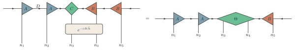

The interface
Everything a figure or a notation file may use is on these pages: this one, how a figure is put together and the rules every command keeps; the commands, each with its keys; and the styles, each with what it is built on and a picture. A name that is not on them is internal (\tn@...) and may change in any release. tests/coverage.py holds the pages and the code to each other: a public name missing here, or a name here that the code does not define, fails the tests. Until 1.0 a name may still be renamed or removed in a minor version, and the CHANGELOG says so; from 1.0, only in a major one.
How a figure is made
A figure is made of two kinds of statement, kept in two places.
- Declarations, in a notation file, once for every figure. What a kind of tensor or index looks like: a TikZ style named for what it means, built on the package's styles (
canl/.style = {tn triangle right, tn fill=canl}), and the distances, with\tnset. The examples' notation isexamples/conventions/notation.tex. - The network, in the figure. Which tensors there are, of which kind, and how they are contracted, in this order:
| step | commands | what it says |
|---|---|---|
| place | \tnstack and \tnlayer, or \tngrid | a block of slots, and the tensor in each |
| connect | \tnconnect | every index the block's layout implies |
| open, join | \tnopen, \tnopenswap, \tnjoin | the other indices: open ones, crossed ones, ones between two ports |
| label | \tnput, \tnmid | text on what is not an open index |
| between blocks | \tneq, \tnapprox, \tnbreak | a relation sign, or a new row |
Step by step
One figure, built a command at a time in the examples' notation: on the left the figure so far, what the step adds marked; on the right what it draws. canl, center, canr, gate and gauge are the notation's declarations; every other word is a command or a name the stack gave. Nothing in it is a length or a coordinate, so two people who draw the same network write the same file.

The gate layer under it: the sites' indices run through the first two slots and the last, and a gate spans the two in between.

Every index the layout implies, in one command: the bonds along the layer, here with arrows, and the indices down the sites, through the gate.
\begin{tikzpicture} \tnstack{S}{5}{ket, gate} \tnlayer{S}{ket}{2*canl/$A$, center/$C$, 2*canr/$B$} \tnlayer{S}{gate}{2*|, gate/$e^{-i\,\delta t\,\hat h}$/2, |} \tnconnect[along=gauge]{S}\end{tikzpicture}

The indices the layout does not imply: the bonds that leave the chain at either end.

The physical indices, opened down from the whole stack and labelled as they are opened; #1 counts them.
\begin{tikzpicture} \tnstack{S}{5}{ket, gate} \tnlayer{S}{ket}{2*canl/$A$, center/$C$, 2*canr/$B$} \tnlayer{S}{gate}{2*|, gate/$e^{-i\,\delta t\,\hat h}$/2, |} \tnconnect[along=gauge]{S} \tnopen[edge=gauge]{left}{S-ket-1} \tnopen[edge=gauge]{right}{S-ket-5} \tnopen[label=$n_{#1}$]{down}{S}\end{tikzpicture}

Text on what is not an open index, by name: the bond dimension, midway between two tensors.
\begin{tikzpicture} \tnstack{S}{5}{ket, gate} \tnlayer{S}{ket}{2*canl/$A$, center/$C$, 2*canr/$B$} \tnlayer{S}{gate}{2*|, gate/$e^{-i\,\delta t\,\hat h}$/2, |} \tnconnect[along=gauge]{S} \tnopen[edge=gauge]{left}{S-ket-1} \tnopen[edge=gauge]{right}{S-ket-5} \tnopen[label=$n_{#1}$]{down}{S} \tnmid{S-ket-1}{S-ket-2}{$D$}\end{tikzpicture}

A sign after the block, and the next block after the sign: the gate contracted into the two sites it acts on.
\begin{tikzpicture} \tnstack{S}{5}{ket, gate} \tnlayer{S}{ket}{2*canl/$A$, center/$C$, 2*canr/$B$} \tnlayer{S}{gate}{2*|, gate/$e^{-i\,\delta t\,\hat h}$/2, |} \tnconnect[along=gauge]{S} \tnopen[edge=gauge]{left}{S-ket-1} \tnopen[edge=gauge]{right}{S-ket-5} \tnopen[label=$n_{#1}$]{down}{S} \tnmid{S-ket-1}{S-ket-2}{$D$} \tneq \tnstack{T}{5}{ket} \tnlayer{T}{ket}{2*canl/$A$, center/$\Theta$/2, canr/$B$} \tnconnect[along=gauge]{T} \tnopen[edge=gauge]{left}{T-ket-1} \tnopen[edge=gauge]{right}{T-ket-5} \tnopen[label=$n_{#1}$]{down}{T}\end{tikzpicture}

Conventions
These are the rules every command keeps, so that one that is learned predicts the rest.
- Every optional argument is
key=value. No command takes a bare style or a bare text in brackets. (\tnputand\tnmidtake TikZ's placement keys,above,below=2pt, and\tnbondTikZ's path options, which are keys too.) - The things a command draws are its mandatory arguments, in this order: the block, then what in it (a layer, a direction), then the content.
- Edge types are
edge=, and where a command draws two kinds of index,along=(along the layers) anddown=(down the sites). - A figure places, then connects, then opens, then labels. A block is placed (
\tnstackand\tnlayer, or\tngrid), its implied indices drawn (\tnconnect), the rest opened or joined (\tnopen,\tnjoin), and only then are labels put on what is not an open index (\tnput,\tnmid). - Every index is drawn once. Opening or joining one that is drawn already is an error; opening a whole block skips the ones that are taken.
- No lengths and no coordinates in a figure. Distances are tokens, set once in a notation with
\tnset; positions are slots.
Names a figure can refer to
| name | is |
|---|---|
<stack>-<layer>-<i> | the tensor in slot i of a layer (one that spans is named by its first slot and top layer) |
<grid>-<i>-<j> | the tensor at column i, row j of a grid |
<grid>-<i>-<j>-a, -b | the tensor on the bond after it along a row, along a column (bonds=) |
<stack>-left, <stack>-right | the environment blocks of a stack |
<stack>-<layer>-<i>-slot | the center of a slot, tensor or not, including columns 0 and n+1 |
<stack>-<i>-<dir> | the end of site i's index opened up or down on the whole stack |
<stack>-<layer>-<dir> | the end of a layer's index opened left or right on the whole stack, or running from an environment block into an empty slot |
<tensor>-<dir> | the end of a tensor's own index opened that way |
<tensor>-<dir>-<n> | ... the n-th, when it has several that way |
<grid>-<i>-<j>-down | the end of a grid tensor's index out of the plane |
<tensor>:<side>[:<n>] | a port, for \tnjoin |